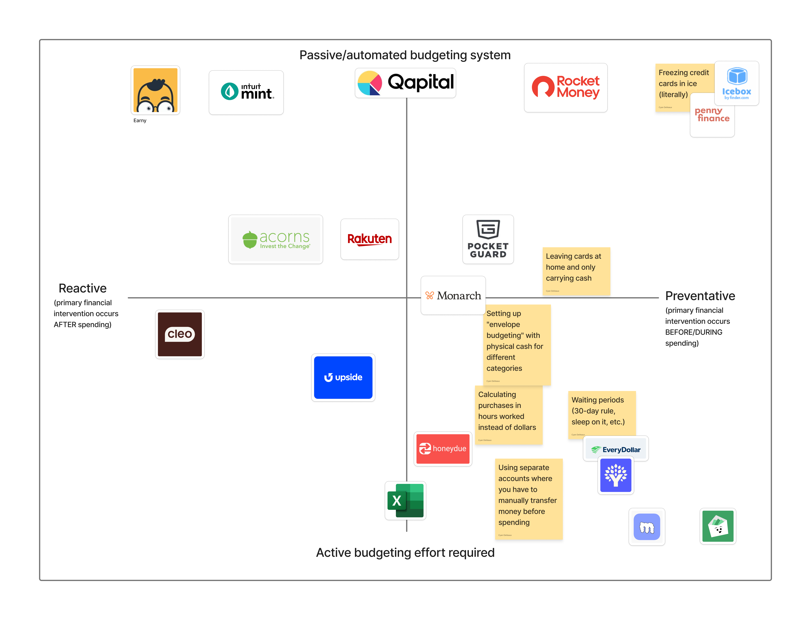
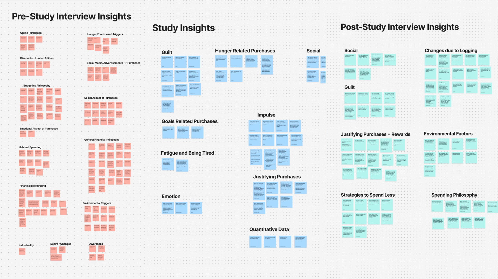
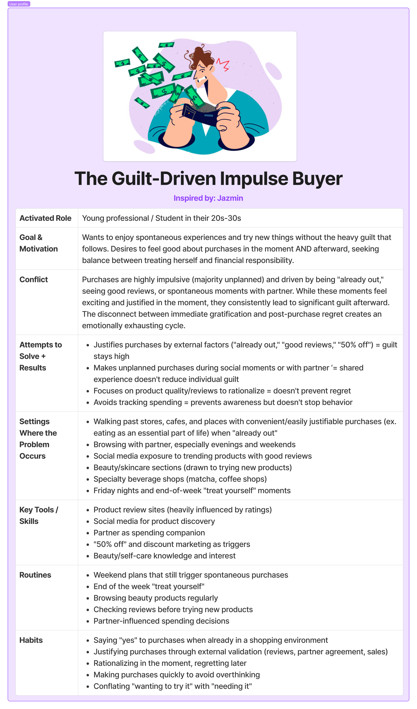
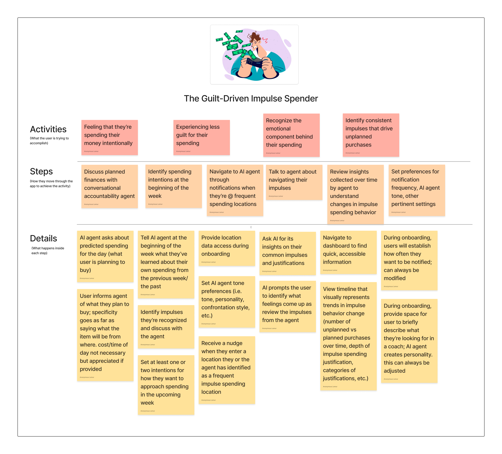

Shaping an AI Financial Coach Through Behavioral Research
Generative research on impulse spending that defined the product strategy, feature architecture, and AI capabilities for a new financial coaching platform.
Project Overview
- Role
- UX Researcher · Team of 4
- Context
- Stanford · Design for Behavior Change
- Methods
- Literature Review · Competitive Analysis · Screener Design · Diary Studies · Interviews · Thematic Analysis · Behavioral Modeling · Assumption Testing · AI Intervention Study · Usability Testing
My Research Ownership
Study Design & Execution
Authored screener (N = 39), baseline diary study protocols (N = 9), intervention study methodology (N = 7), and pre/post interview guides.
Synthesis & Behavioral Modeling
Led thematic analysis and authored the behavioral journey map and baseline persona.
Assumption & Intervention Testing
Independently selected, executed, and synthesized Assumption Test #1 (N = 14); co-designed the AI field intervention study.
Product Translation & Evaluation
Created story maps and dashboard wireframes; designed and ran the formative usability evaluation (N = 2).
Executive Summary
Traditional budgeting tools act reactively—logging expenses after the money is already spent. Sage began instead as a generative question: what actually drives an impulse purchase, and could an AI coach meet people at the point of intent? This was foundational discovery research meant to shape a new product from the ground up, not to evaluate an existing one.
Across a baseline diary study, participants repeatedly made unplanned purchases in response to stress, fatigue, social situations, convenience, and environmental cues—but whether they considered those purchases “bad” depended heavily on context and personal values. Some rationalized unplanned purchases as necessary; others experienced guilt and avoidance; some did not particularly want to change the behavior at all.
I owned major portions of the research program across four phases: designing the baseline study and recruitment materials, synthesizing behavioral patterns into models, independently testing a foundational product assumption, designing the subsequent AI intervention study, and later designing the usability evaluation.
The research defined Sage as a tool built to help users recognize patterns, set intentions, and decide for themselves what they wanted to change—rather than one that simply tries to stop impulse purchases.
01 — Framing the Behavior
What actually drives an impulse purchase—and where could an intervention realistically fit?
Before designing an intervention, we needed to understand what research already suggested about impulse spending and where existing financial tools intervened.
I focused my literature review on FOMO and known psychological and contextual drivers of impulse purchasing. Across the team’s broader review, a consistent pattern emerged: spending decisions were influenced not only by financial knowledge, but by environmental cues, emotional states, social pressure, and friction built into purchasing environments.
What existing tools assume about spending behavior
I helped research the competitive landscape and assembled the final 2×2 positioning map. I defined the axes as:
- Timing of intervention: Reactive ↔ Preventative
- User effort required: Passive ↔ Active
I specifically researched HoneyDue, Penny, and non-digital/manual money-management methods, then placed the broader set of tools across the final matrix.

Main Takeaway
Most existing tools either helped people understand spending after it happened or required sustained manual budgeting. We became interested in whether a lower-friction intervention could operate closer to the decision itself.
02 — Establishing a Behavioral Baseline
Revelation 1: Impulse spending was far more contextual than we assumed.
Study Design
I designed the screener, study outline, participant emails, introduction materials, discussion guide, and pre- and post-study interview scripts.
The screener was designed to understand everyday spending frequency, feelings around spending, awareness of daily totals, and willingness to participate in repeated logging. From 39 responses, the team recruited nine participants who regularly engaged in convenience spending.
During the five-day diary study, participants logged purchases close to the moment they occurred, including what they bought, cost range, whether the purchase was planned, perceived impulsivity, guilt, environmental context, reasoning, and emotional response.
Why a diary study?
Impulse purchases are situational and easy to rationalize retrospectively. I wanted the study to capture purchases and surrounding emotions as close to the moment of spending as possible rather than relying only on retrospective interviews.
The combination of repeated logging and pre/post interviews let us compare what participants believed about their habits with what appeared in their day-to-day behavior.
Synthesis Process

We synthesized the study across three temporal views: what participants believed about their spending before the study, what they reported in the moment, and how they interpreted their behavior afterward.
Key Baseline Findings
★ Key Conceptual Insight
Finding 03: Whether spending felt problematic depended more on identity and values than on impulsivity alone.
Purchases tied to family, health, social connection, convenience, or self-improvement were often judged more leniently—even when they were spontaneous or expensive. This proved that “unplanned” did not automatically mean “undesirable,” setting up our entire shift toward user agency.
Finding 01: People often rationalized unplanned purchases once the context made them feel reasonable.
Participants frequently reframed spontaneous purchases as necessary, productive, efficient, or goal-aligned. Hunger, time pressure, social situations, discounts, and “while I’m here” logic made purchases feel justified even when they were unplanned.
Finding 02: Logging made invisible spending visible—but awareness affected people differently.
Several participants became more deliberate after seeing everyday purchases accumulate. Others felt validated when the log confirmed that their spending still aligned with how they saw themselves. Awareness alone did not produce one uniform behavioral response.
Modeling the Impulse Cycle
I translated the baseline synthesis into a behavioral journey model showing how spending moves through:


The map combines what participants said, thought, did, and felt at each stage, helping us locate where an intervention could realistically interrupt automatic behavior without assuming every impulse purchase should be prevented.
Supporting Behavioral Pattern
03 — Challenging Our Biggest Assumption
Revelation 2: Not everyone wanted the behavior eliminated.
That assumption underpinned the entire initial product. If people did not perceive impulse spending as something worth “fixing,” a restriction-oriented intervention would be solving the wrong problem.
I selected this as a high-risk assumption, designed and ran the rapid test, analyzed the responses, and documented the implications for the product.
Assumption Test Result
8 of 14
expressed at least some desire to stop or reduce impulse spending.
(Only 5 of 14 gave an unqualified “yes”.)
Rapid directional test · n = 14 · convenience sample
Interpretation & Impact
The result was not evidence that most impulse spenders do not care about changing. The sample was small and convenient. But it was enough to challenge a foundational assumption: we could not responsibly design Sage around the idea that impulse spending was universally experienced as a problem.
From fixing behavior → supporting agency: I recommended reframing Sage away from a product that “fixes” impulse spenders and toward a financial-wellness guide that could support users whether they wanted to reduce, understand, or simply become more intentional about their behavior.
04 — Testing the Intervention
Revelation 3: Awareness moved faster than behavior.
Study Setup
- 7 participants
- 5-day field intervention
- Morning intention-setting
- AI reflection on unplanned purchases
- Pre/post interviews + conversation transcripts
I designed the intervention-study goal, methodology, selection criteria, key research questions, study outline, participant communications, discussion guide, and introduction materials.
Participants began each day by telling a ChatGPT-based reflection agent what they planned to purchase. During the day, they could add plans as needed. In the evening, the agent prompted reflection on unplanned purchases and asked about context, emotions, and reasoning.
The AI was intentionally framed as a reflective partner rather than an enforcer: it was meant to surface patterns and ask “why,” not shame users for spending.
Intervention Findings
Finding 01: Awareness moved faster than behavior.
Nearly all participants reported becoming more conscious of their spending patterns, but most continued making similar purchases over the five-day period.
Implication: We stopped treating short-term purchase reduction as the immediate measure of success. Awareness became an intermediate outcome rather than evidence of completed behavior change.
Finding 02: Social spending behaved differently.
Many unplanned purchases happened in social settings but produced relatively little regret because the purchase carried relational value.
Implication: A purely individual “control your spending” model would miss the social meaning embedded in financial behavior.
Finding 03: Reflection only works if the AI knows when to stop.
Participants generally appreciated a non-judgmental tone, but excessive follow-up questioning sometimes felt repetitive, overly validating, or even manipulative.
Implication: Reflection depth should adapt to the user and the significance of the purchase rather than treating every purchase as an invitation to probe.
Finding 04: Morning planning sometimes mattered more than evening reflection.
Declaring planned purchases introduced friction before spending occurred. Several participants reported pausing during the day because they had already articulated their intentions that morning.
Implication: Intention-setting became a core interaction rather than a setup step.
Finding 05: Unplanned purchases followed recognizable emotional logics.
Participants’ purchases clustered around patterns such as mood regulation, social compliance, FOMO, and reward logic. The AI was most useful when it surfaced a pattern the participant had not consciously articulated.
05 — Research → Product Decisions
Rather than translating findings directly into isolated features, I used the research to define several principles for how Sage should behave.
Principle 01 — Preserve Agency
Evidence: Not all participants saw impulse spending as inherently undesirable.
Design Response: Sage should help users reflect, not automatically block or punish purchases.
Principle 02 — Intervene Before Autopilot
Evidence: Morning planning introduced useful friction before some purchases occurred.
Design Response: Daily intention-setting becomes central to the experience.
Principle 03 — Calibrate Reflection
Evidence: Some users valued deep probing; others found persistent AI questioning exhausting.
Design Response: AI coaching should adjust depth and tone rather than applying the same reflection pattern to every purchase.
What We Tested → What We Learned → What Changed
| What We Tested | What We Learned | Product Implication |
|---|---|---|
| Morning Intention-Setting | Planning sometimes interrupted automatic purchases. | Make daily intentions a core interaction. |
| AI Reflection | Useful for pattern discovery, tiring when too persistent. | Use adaptive reflection depth. |
| Unplanned Spending | Meaning depends heavily on context and values. | Avoid blanket judgment of “impulse” behavior. |
| 5-Day Behavior Change | Awareness increased more consistently than purchase reduction. | Treat awareness as an intermediate outcome. |
Story Mapping & Wireframes
Once the team began defining the product, I created the story map for the Guilt-Driven Impulse Buyer to understand how the system would feel from the user’s perspective across planning, spending, reflection, and longer-term awareness. This helped connect behavioral findings to the MVP rather than jumping directly from research themes to screens.

Note on Visual Direction: To counter the guilt and avoidance observed in research, I helped write the rationale for a non-punitive visual tone, choosing soft visual boundaries to avoid triggering balance-checking anxiety.
06 — Evaluating Sage
Evaluating Sage
Formative usability test · n = 2
I designed the medium-fidelity usability study, including the goal, script, participant introduction, task structure, and research reflection.
Tasks Tested
- Onboarding + bank integration
- Logging a planned purchase
- Exploring a spending insight
- Reviewing spending with the AI + setting limits
The goal was not just general usability. The study evaluated whether users understood the model of plan → spend → reflect and whether the AI felt like a meaningful part of that experience.
Usability Evaluation Findings
Finding 01: The AI did not feel like the product.
Both testers were confused when logging a planned purchase redirected them into the AI experience.
Why? One participant explained that AI in financial products usually meant “customer service” to her, so she instinctively avoided it unless she needed help.
Design Change: We made the AI the primary landing experience and introduced its role much earlier during onboarding.
Finding 02: Users did not understand Sage’s behavioral model.
The team had failed to clearly explain the basic loop: plan purchases in the morning → live your day → reflect on unplanned spending later.
Design Change: We added onboarding that explicitly introduced the daily planning and reflection loop before users entered the main experience.
Finding 03: The interface lacked clear system status.
Participants were unsure where they were during onboarding and whether submitted purchases had actually been saved.
Design Change: We added progress indicators, clearer submission feedback, and state persistence.
Interaction Evolution
- Before: Dashboard treats AI as one destination among several.
- Research Evidence: Users did not understand why they were redirected into AI, and some interpreted chat as customer support.
- After: AI becomes the primary landing experience and immediately prompts users to articulate planned purchases.
07 — What We Know, and What We Don’t
What the research established
Across the baseline and intervention studies, we found consistent evidence that impulse spending is strongly contextual; that people judge purchases according to identity, values, and social meaning; and that reflective logging can increase awareness.
The intervention study also suggested that intention-setting may create useful friction before some purchases and that AI reflection can help surface patterns users had not consciously articulated.
What it did not establish
These studies were small, relied significantly on self-report, and lasted only five days.
The intervention increased awareness more consistently than it changed spending behavior, so the research does not establish that Sage causes sustained reductions in impulse spending.
The rapid assumption tests also used small convenience samples and, in some cases, hypothetical scenarios, limiting generalizability.
What I would test next
I would run a longer longitudinal field experiment with a distinct baseline and intervention period, recruit across a wider range of financial circumstances, and establish behavioral measures beyond self-reported awareness.
Measures could include:
- Proportion of unplanned purchases
- Delay between impulse and purchase
- Abandoned / avoided purchases
- Changes in spending patterns by trigger type
- Whether reflection remains useful after novelty wears off
In Closing
Final Product Direction
Sage became a financial-wellness concept centered on awareness, intention-setting, and reflective coaching rather than strict spending restriction.
The research suggested that the strongest near-term value was helping people recognize why purchases happened, notice patterns they had not articulated, and create small moments of reflection before or after spending.
Our five-day intervention did not establish sustained behavior change. Instead, it gave us evidence that awareness and intention-setting were promising mechanisms worth testing over a longer period.